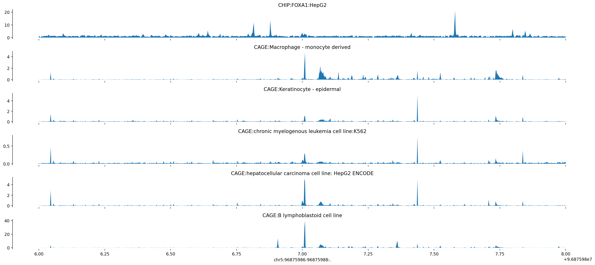
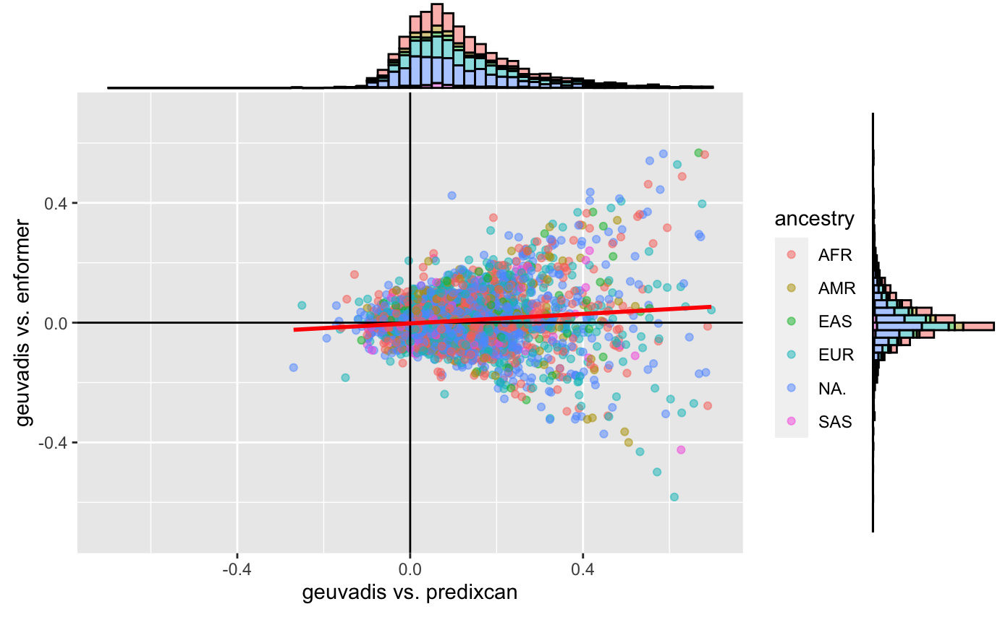
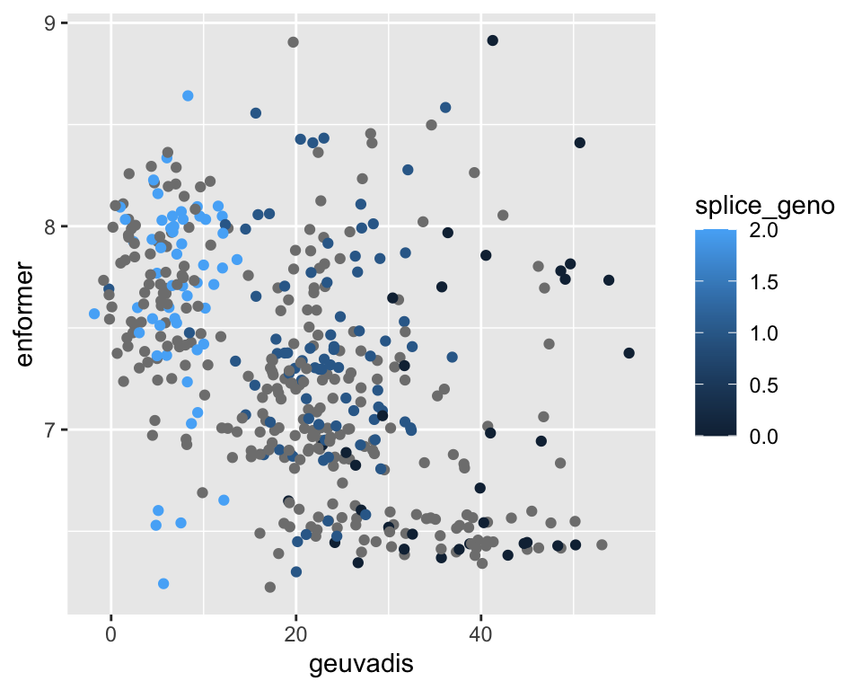
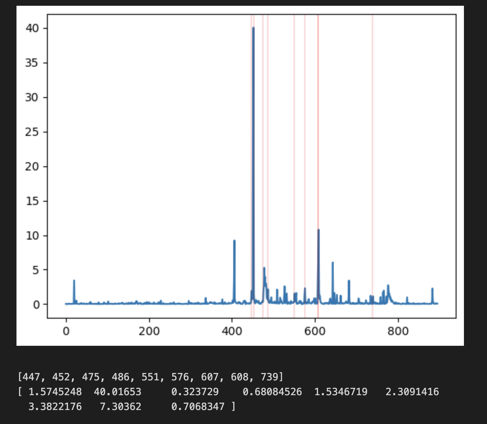

suppressMessages(library(tidyverse))suppressMessages(library(glue))PRE ="/Users/saideepgona/Library/CloudStorage/Box-Box/imlab-data/data-Github/Daily-Blog-Sai"## COPY THE DATE AND SLUG fields FROM THE HEADERSLUG="updating-epistasis-analysis-primary-TSS"## copy the slug from the headerbDATE='2023-04-10'## copy the date from the blog's header hereDATA =glue("{PRE}/{bDATE}-{SLUG}")if(!file.exists(DATA)) system(glue::glue("mkdir {DATA}"))WORK=DATA
Context
It is now time to start working on quantifying the primary TSS expression estimates for GEUVADIS individuals. This can then be used to update the epistasis analysis so that I can start finalizing for biology of genomes.
First things first, because our covid-ct allocation is over, work needs to be transferred to our TFXcan storage on grand. This is pretty slow for our Enformer runs because we have millions of individual files. I tried a couple of transfer methods to see what works best. Naive GNU copy is very slow, taking nearly a week to run for this dataset. Another method is to first tar/gz the data and then transfer the tarball. This is faster than naive copy, but still requires more than a day for this dataset to transfer. Finally, I tried using globus without tar/gz. This turned out to be the best, requiring only 6 hours to complete and being the easiest to execute.
We need to do this before running the quantification because we no longer have compute resources for theta, and we can’t run quantification quickly on login nodes. Instead we can allocate a single compute node on polaris which gives us a 32/64 core processer we can use to parallelize efficiently. Also, polaris doesn’t have access to theta-fs0 where the runs are currently stored.
In addition, the easiest way to quantify expression using the primary TSS is to simply create a modified TSS reference file which includes only the primary TSS site. I have previously (2023-03-22) shown that the first TSS from GFF transcript annotations is universally equivalent to the gene body start location, which is promising and makes this simple. We can just parse our full TSS reference file to include only the first in the list:
Code
import osmetadata_dir ="/Users/saideepgona/Library/CloudStorage/Box-Box/imlab-data/data-Github/analysis-Sai/metadata"withopen(os.path.join(metadata_dir,"genes_tss.bed"), "r") as i:withopen(os.path.join(metadata_dir,"genes_tss_primary.bed"), "w") as o:for line in i: p_line = line.strip().split("\t") p_tss = p_line[1].split(",")[0] o_line = [p_line[0], p_tss, p_line[2]] o.write("\t".join(o_line)+"\n")
Now this gets passed into the quantification config file.
To run the quantification on Polaris we need to allocate a single compute node. Then we can modify the contacts to specify 64 parallel processes, and then run the clarification as before. Here is how we can allocate a single node on preemptable queue:
1.) We shifted the Enformer input window such that it centers on the primary TSS rather than the entire gene body.
2.) We also now only quantify the expression estimates at the primary TSS, rather than all TSS sites.
After doing this, the expression estimates for ERAP2 seemed way off (expression less than 10, rather than greater than 200), and it wasn’t clear whether this was due to an implementation error or is actually what results from the above 2 changes.
Change of input window can have a large impact
The first step is to confirm that the Enformer outputs from the pipeline are identical to expectation based on the google colab notebook.
The following figure is from running the Enformer colab notebook and plotting the tracks for ERAP2.

ERAP2_Google_Colab
The absolute expression of of the LCL ERAP2 peak is around 40, where before that peak was close to 77 when centering on the gene. Note that due to the change in context, the LNPEP gene promoter is no longer present in the window, which is a major change. This is all summarized in the pdf transcript placed within this directory from the google colab.
Primary TSS is not the best quantification
Despite this difference, if the observed expression peak is located directly at the TSS we should still expect moderately high expression, which we do not see. This is a major difference (in theory).
What is strange is that the usual predixcan/enformer/geuvadis plot doesn’t seem to change much:

Predixcan_enformer_geuvadis_primary_tss
and when you look at ERAP2 specifically, the correlation direction is preserved but the plot is different:
 It seems like using the primary TSS is not really so accurate for ERAP2. For LCL, the high expression peak is actually not directly at the TSS site, but a bit downstream.
This can be shown below:
 In conclusion, it seems like the “primary” tss quantification is complicated. While the existing relationships are more or less maintained, the magnitudes are extremely different and the shape “feels” quite different.
Source Code
---title: "updating-epistasis-analysis-primary-TSS"author: "Saideep Gona"date: "2023-04-10"format: html: code-fold: true code-summary: "Show the code"execute: freeze: true warning: false---```{r}#| label: Set up box storage directorysuppressMessages(library(tidyverse))suppressMessages(library(glue))PRE ="/Users/saideepgona/Library/CloudStorage/Box-Box/imlab-data/data-Github/Daily-Blog-Sai"## COPY THE DATE AND SLUG fields FROM THE HEADERSLUG="updating-epistasis-analysis-primary-TSS"## copy the slug from the headerbDATE='2023-04-10'## copy the date from the blog's header hereDATA =glue("{PRE}/{bDATE}-{SLUG}")if(!file.exists(DATA)) system(glue::glue("mkdir {DATA}"))WORK=DATA```## ContextIt is now time to start working on quantifying the primary TSS expression estimates for GEUVADIS individuals. This can then be used to update the epistasis analysis so that I can start finalizing for biology of genomes.First things first, because our covid-ct allocation is over, work needs to be transferred to our TFXcan storage on grand. This is pretty slow for our Enformer runs because we have millions of individual files. I tried a couple of transfer methods to see what works best. Naive GNU copy is very slow, taking nearly a week to run for this dataset. Another method is to first tar/gz the data and then transfer the tarball. This is faster than naive copy, but still requires more than a day for this dataset to transfer. Finally, I tried using globus without tar/gz. This turned out to be the best, requiring only 6 hours to complete and being the easiest to execute.We need to do this before running the quantification because we no longer have compute resources for theta, and we can't run quantification quickly on login nodes. Instead we can allocate a single compute node on polaris which gives us a 32/64 core processer we can use to parallelize efficiently. Also, polaris doesn't have access to theta-fs0 where the runs are currently stored.In addition, the easiest way to quantify expression using the primary TSS is to simply create a modified TSS reference file which includes only the primary TSS site. I have previously (2023-03-22) shown that the first TSS from GFF transcript annotations is universally equivalent to the gene body start location, which is promising and makes this simple. We can just parse our full TSS reference file to include only the first in the list:```{python eval=FALSE}import osmetadata_dir ="/Users/saideepgona/Library/CloudStorage/Box-Box/imlab-data/data-Github/analysis-Sai/metadata"withopen(os.path.join(metadata_dir,"genes_tss.bed"), "r") as i:withopen(os.path.join(metadata_dir,"genes_tss_primary.bed"), "w") as o:for line in i: p_line = line.strip().split("\t") p_tss = p_line[1].split(",")[0] o_line = [p_line[0], p_tss, p_line[2]] o.write("\t".join(o_line)+"\n")```Now this gets passed into the quantification config file.To run the quantification on Polaris we need to allocate a single compute node. Then we can modify the contacts to specify 64 parallel processes, and then run the clarification as before. Here is how we can allocate a single node on preemptable queue:```{bash eval=FALSE}qsub-I-A TFXcan -l filesystems=home:grand -l walltime=5:00:00 -q preemptable```## Expression estimates differ greatlyAs a reminder, we made 2 changes to protocol:1.) We shifted the Enformer input window such that it centers on the primary TSS rather than the entire gene body.2.) We also now only quantify the expression estimates at the primary TSS, rather than all TSS sites.After doing this, the expression estimates for ERAP2 seemed way off (expression less than 10, rather than greater than 200), and it wasn't clear whether this was due to an implementation error or is actually what results from the above 2 changes. ### Change of input window can have a large impactThe first step is to confirm that the Enformer outputs from the pipeline are identical to expectation based on the google colab notebook.The following figure is from running the Enformer colab notebook and plotting the tracks for ERAP2.The absolute expression of of the LCL ERAP2 peak is around 40, where before that peak was close to 77 when centering on the gene. Note that due to the change in context, the LNPEP gene promoter is no longer present in the window, which is a major change. This is all summarized in the pdf transcript placed within this directory from the google colab.### Primary TSS is not the best quantificationDespite this difference, if the observed expression peak is located directly at the TSS we should still expect moderately high expression, which we do not see. This is a major difference (in theory).What is strange is that the usual predixcan/enformer/geuvadis plot doesn't seem to change much:and when you look at ERAP2 specifically, the correlation direction is preserved but the plot is different:It seems like using the primary TSS is not really so accurate for ERAP2. For LCL, the high expression peak is actually not directly at the TSS site, but a bit downstream. This can be shown below:In conclusion, it seems like the "primary" tss quantification is complicated. While the existing relationships are more or less maintained, the magnitudes are extremely different and the shape "feels" quite different.